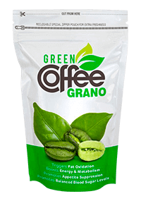

अपनी प्रतिद्वंद्वी को मैंने कैसे हराया और फिर से कैसे अपने पति की प्यारी बनी: मेरा राज़
सभी को हेलो!
याद है, मैंने बताया था कि कैसे मैं अपना वज़न 25 किलो घटा पाई और अपने पति का दिल जीत पाई? आज मैंने इस पर विस्तार से लिखना तय किया है। मेरा तरीका सरल है और सभी की पहुँच में है। और जल्द ही आपको इसका यकीन हो जाएगा।
मैं कभी भी दुबली नहीं थी। जवानी में, मैं बहुत सक्रिय रहती थी, इसीलिए खुद को सामान्य समझती थी। किसी तरह की डायटिंग नहीं करती थी, पर जब आर्ट इंस्टीट्यूट में पढ़ती थी, तो अपनी तस्वीरों में इतनी व्यस्त हो जाती थी कि खाना ही भूल जाती थी। पर पढ़ाई के बाद जब शादी की तो मेरे शरीर में बदलाव आने लगे।
मैं तो इतनी खुश थी कि शुरू में मेरा इस पर ध्यान ही नहीं गया कि मेरे साथ हो क्या रहा है। कैफे, रेस्तरां, घर पर बने भारी स्वादिष्ट खाने, जो मैं बड़ी मात्रा में सुधीर के लिए बनाती थी, और बेशक, खुद भी खाती थी। जल्दी ही इन सबका असर मेरे शरीर पर दिखने लगा। कूल्हे फैल गए, पेट बाहर निकलने लगा, और पीठ पर विश्वासघाती फोल्ड बनने लगे।
दूसरी अप्रिय बात यह थी कि मुझे अपनी प्रिय पेंटिंग छोड़नी पड़ी। अपना सारा खाली समय मैंने सुधीर को और उसकी सेवा को समर्पित कर रखा था। इसके बाद मुझमें ऊर्जा बहुत कम बचती थी। मैं तभी सोचने लगी थी कि मुझे वज़न कम करना ज़रूरी है। पर अचानक पेट में बच्चा आ जाने के बाद सारी योजनाएँ गड़बड़ा गईं।
यह खबर हम दोनों के लिए ही बहुत खुशियों भरी थी। सुधीर बहुत खुश थे और उनका मानना था कि तनाव से बचने के लिए मैं जो भी चाहूँ सब कुछ खाऊँ।
अपने बेटे की देखभाल में डूबी रही, और मैंने ध्यान भी नहीं दिया कि सुधीर बदलने लगे हैं। धीरे-धीरे मुझमें उनकी दिलचस्पी खोने लगी थी। पहले, यह होता था कि वह सचमुच मुझे अपनी बाहों में घेरे रहते थे, जल्दी घर आते थे, हर दिन जैसे त्योहार था, फूल देते थे और सभी प्रकार के उपहारों से अपना लाड़ जताते थे। और अब बस गाल पर एक सूखा सा चुंबन ही होता था, ऐसा भी होता था कि पूरे दिन मुझे छुएँ ही ना। और मुझसे कहते कि मैं शायद बच्चे के साथ थक गई होंगी और वह मुझे परेशान नहीं करना चाहते। और मुझे शक भी नहीं हुआ कि कुछ गड़बड़ था!
तब तक मुझे इस बात की खबर नहीं हुई, जब तक मैंने गलती से सुधीर का फोन नहीं देखा। मुझे कुछ देखना था। मैं चकित रह गई, मुझे वहां एक डेटिंग साइट का एप मिला, और उसमें - एक लड़की के साथ खुली बातचीत चल रही थी! देखने में, वह बहुत सुंदर लग थी, और सबसे महत्वपूर्ण बात - वह बहुत दुबली थी। पूरी तरह से हैरान, मैंने पढ़ना शुरू किया कि वे वहाँ क्या बातें करते हैं। उन्होंने मेरी भी चर्चा की थी! इस बात की हँसी भी उड़ाई थी कि बच्चे के जन्म देने के बाद मैं कितनी मोटी हो गई हूँ। यह बहुत भयानक था! मुझे बहुत अपमान महसूस हुआ।
मुझे नहीं पता कि सुधीर से कुछ न कहने की ताकत मुझे कैसे मिली। शायद बस यह समझ में आया कि अपने
तरीके से वे सही हैं। गर्भावस्था के बाद मेरा शरीर बुरी तरह बदल गया था। और मैंने इसके लिए कुछ भी नहीं
किया, जिसका मतलब है कि मैं खुद दोषी हूँ। मुझे अब कोई शक नहीं था कि अगर मैं जैसी हूँ वैसी ही रह गई, तो
सुधीर चले जाएँगे। इसलिए केवल खुद के लिए ही नहीं, बल्कि अपने बेटे मणि के लिए भी मैंने खुद को बदलने का
वादा किया!
मुझे एक पोषण विशेषज्ञ मिला, जिसने मुझे डायटिंग और योगा की सलाह दी। मुझे कक्षाएँ बहुत
पसंद आईं, हालांकि मैं उनसे थक जाती थी।
3 महीने बाद मुझे पता चला कि मेरा वज़न कम हुआ था ... 2 किलो!!! बस !!! मेरे स्तनों में दूध बिलकुल ख़त्म हो गया था। इस वजह से मणि चिड़चिड़ा हो गया था, और मुझे भी घबराहट होने लगी थी। पोषण विशेषज्ञ ने धैर्य रखने के लिए कहा, लेकिन यह सिर्फ पैसे फेंकने जैसा था। और सुधीर मुझे किसी भी क्षण फेंक सकते थे!
मैंने अब ज़बरन पैसे वसूलने वालों को पैसे ना देने का फैसला किया। इंटरनेट पर विभिन्न फ़ोरम पर वजन कम करने के कई मुफ्त तरीके उपलब्ध थे। लेकिन उनमें से अधिकांश को मैंने शुरू में ही हटा दिया: अधिकांश डायटिंग में बहुत भूखा रहना ज़रूरी था, मुझे पहले से ही पता था कि वे मेरे लिए सही नहीं। पूरी तरह से व्यायाम करना भी मेरे लिए संभव नहीं था: बाहों में एक छोटे बच्चे को लेकर, यह लगभग असंभव था।
कुछ महीनों बाद, और कई डायटिंग आजमाने के बाद मुझे निराशा होने लगी थी।
क्या मैं हमेशा के लिए ऐसी ही
रह जाऊँगी, एक बेकार, मोटी, अकेली माँ? एक पुरानी सहेली ने मुझे बचाया। एक बार वह पेस्ट्री का डिब्बा लेकर
चाय पीने मेरे पास आई और जब मैंने आहें भरते हुए उन्हें खाने से मना किया तो वह बहुत हैरान हो गई। मुझे
पेस्ट्री बहुत पसंद हैं, लेकिन मेरी समस्या के साथ क्या थोड़ी सी भी पेस्ट्री खाना संभव है? मेरी बात सुनकर
लीला मुस्कुराई और बोली:
- तुम्हें पेस्ट्री छोड़ने की ज़रूरत नहीं है। मुझे देखो। उसने अपने मॉडल जैसे बदन की ओर इशारा किया। जब भी मैं चाहती हूँ, उन्हें खाती हूँ, और जैसा देख ही रही हो, मेरे बदन पर इसका कोई असर नहीं।
- ऐसा कैसे संभव होता है? क्या राज़ है?
- मैं बस नियमित रूप से ग्रीन कॉफी पीती हूँ। खाने से 30 मिनट पहले दिन में 2-3 बार - वज़न और थकाने वाली डायटिंग की अब कोई समस्या नहीं!
- मैं हैरान रह गई।
- कॉफी पीती हो - और बस? सुनने में अजीब लग रहा है...
- कोई बात नहीं, शुरू में मुझे भी यकीन नहीं हुआ था। पर अपने ही अनुभव से मैं समझ गई। यह कुछ नया है और बहुत ही असरदार है। खुद ही आजमा कर देख लो, इसमें कुछ बिगड़ेगा तो नहीं!
लीला ने उपहार के तौर पर मेरे लिए इस कॉफी का एक पैकेट छोड़ दिया। पर उसका सेवन करने से पहले मैंने इंटरनेट पर उसके बारे में जानने का निश्चय किया। और मुझे यह मिला।
- वजन घटाने के लिए यह एक नया उत्पाद है। इसमें क्लोरोजेनिक एसिड, कैफीन और टैनिन शामिल हैं। ये मेटाबोलिज़्म बढ़ा देते हैं, विषाक्त पदार्थों को शरीर से बाहर निकालते हैं और स्वाभाविक रूप से भूख को नियमित करते हैं। इनकी बदौलत, शरीर जल्दी से चरबी जलाने लगता है, और आपका वज़न तेजी से कम होने लगता है। चूंकि यह उत्पाद पूरी तरह से प्राकृतिक है, इसलिए इसका कोई साइड इफेक्ट या दुष्प्रभाव नहीं है, इसका सेवन गर्भवती महिलाएँ और स्तनपान कराने वाली माताएँ भी कर सकती हैं। ऐसे ही एक साधन के बारे में, मैं हमेशा सोचती थी!
मैंने को निर्देशों के अनुसार पीना शुरू कर दिया - खाने से आधा घंटे पहले, दिन में तीन बार। उसका स्वाद मुझे पसंद आ गया - कसैला और सुखद। चमत्कारों में मुझे विश्वास नहीं था, पर वही हो गया! आधे महीने में ही मेरा वज़न 7 किलो कम हो गया! इस बीच मैं सामान्य रूप से खाना खाती रही और मैंने किसी तरह के व्यायाम भी नहीं किए। क्या सच में ऐसा होता है?
बाद में मैंने अपने लिए कुछ और पैकेट का ऑर्डर कर दिया (ऑर्डर यहाँ पर किया था) और एक प्रयोग करने का निश्चय किया: मैंने कुछ पेस्ट्री खाईं, और वज़न घटने की प्रक्रिया में किसी भी तरह की कमी नहीं हुई! अगले हफ्ते मेरा 3 किलो वज़न और कम हो गया। इसके बाद मैं ज़ोर-शोर से खाने लगी, जो कुछ भी मुझे पसंद आता था। और वज़न घटने की प्रक्रिया जारी रही! 3 महीने में कुल मिलाकर मेरा 25 किलो वज़न कम हो गया। कूल्हे सुडौल हो गए और उनके बीच में चमक सी आ गई, पक्ष उठ गए और लटकना बंद हो गए, और पेट सपाट और सुंदर हो गया। अपने नए बदन को देखकर मुझे इतनी खुशी हो रही है!
मेरी नींद बेहतर हो गई, त्वचा के चकत्ते चले गए। जब भूखे रहने और मनपसंद भोजन छोड़ने की ज़रूरत नहीं रही, मैं काफी शांत हो गई। इसके साथ ही मेरा बेटा भी बहुत शांत और खुश हो गया!
सुधीर अब मेरे लिए फूल और खाने-पीने की चीज़ें लेकर आते हैं, और मेरी ओर ध्यान भी बहुत देते हैं। मज़ाक में उनसे पूछा कि अपनी पत्नी नहीं बदलना चाहोगे। "अरे, क्या कह रही हो! - वह बोले। - तुम्हारे जैसी महिलाओं को नहीं छोड़ा जाता। ऐसी महिलाओं को पूरी ज़िंदगी खोजा जाता है और ज़िंदगी के आखिर तक सहेजा जाता है"। वह भूल गए थे कि उस लड़की के साथ मेरी कैसे हँसी उड़ाई थी।
और सबसे मुख्य बात - मेरे पास अब हिम्मत है कि मैं थोड़ी बहुत पेंटिंग कर पाऊँ। और प्रेरणा इतनी थी - बस उड़ने को तैयार थी! मैं पहले से कहीं अधिक खुश महसूस कर रही थी!
मेरे प्यारे पाठको! तब तक इंतज़ार मत कीजिए कि फालतू वज़न आपकी सेहत और निजी खुशियों पर गंभीर असर दिखाने लगे। आखिर के साथ वज़न घटाना हर किसी के लिए संभव है। अभी, बस तक उत्पादक दो पैकेट एक पैकेट के दाम में दे रहे हैं। वज़न घटाना अब पहले से दुगुना आसान हो गया है! जल्दी करें, कम दाम वाले पैकेटों की संख्या सीमित है।
लेखिका: सुनीता परमार
टिप्पणियाँ:
सावित्री:
सुनीता, आप शानदार हैं! आपके परिणाम शानदार हैं! मुझे भी ऐसा ही बदन चाहिए।
साक्षी:
इतना बढ़िया परिणाम, यकीन नहीं हो रहा! मैं भी ऑर्डर करती हूँ , नहीं तो मैं बच्चे के जन्म से पहले की किसी भी ड्रेस में घुस नहीं पा रही हूँ, पहनने को कुछ नहीं है।
मोहिनी:
मैं भी यह कॉफी पी रही हूँ: 2 हफ्तों में 9 किलो कम हो गया है! पेट की परतें निकल गई हैं, कूल्हों में कसाव आ गया है। अभी पीना जारी है, थोड़ा वज़न और कम करना है। यह सुविधाजनक है - इसमें डायटिंग की भी ज़रूरत नहीं है!
जया:
लड़कियो, क्या यह सच में बिना डायटिंग के वज़न घटाती है? मैं तो भूल ही गई हूँ अपनी मनपसंद मिठाई आखिरी बार कब खाई थी, और वज़न है कि घटता ही नहीं है...
आशा:
जया, ज़रूर आजमाओ ! अपने अनुभव से बता रही हूँ: वज़न अपने आप ही गायब हो जाता है, किसी तरह की कटौती की ज़रूरत नहीं होती! ढाई महीनों में मेरा 20 किलो वज़न कम हो गया है।
माधवी:
पतिदेव हाथों में लेकर घूमते हैं। लड़कियो, दुबले-पतले होना बड़ा खुशनसीबी है! उससे खुद को नकारो मत, खास तौर पर जब ऐसी लाभदायक छूट मिल रही है!
नीला:
सुनीता सफलता से वज़न कम करने के लिए बधाई। आपको और बेटे को अच्छी सेहत की शुभकामनाएँ! सही बात कहते हैं: दुनिया बदलनी है - तो खुद से शुरुआत करो।
जगजीत:
अरे वाह, कहानी प्रेरक है! अपने लिए भी खरीदती हूँ , दुबली हो जाऊँगी, और सारे मर्द मेरे होंगे!
अंजला:
मैंने भी की मदद से लगभग 30 किलो कम कर लिए। मेरे पिछले पति की आँखें देखी होतीं। उसने ही तो मुझे छोड़ दिया था, क्योंकि मैं उसके लिए बहुत मोटी थी!
पद्मा:
आपकी कहानी से प्रेरित हुई। ऑर्डर कर रही हूँ !